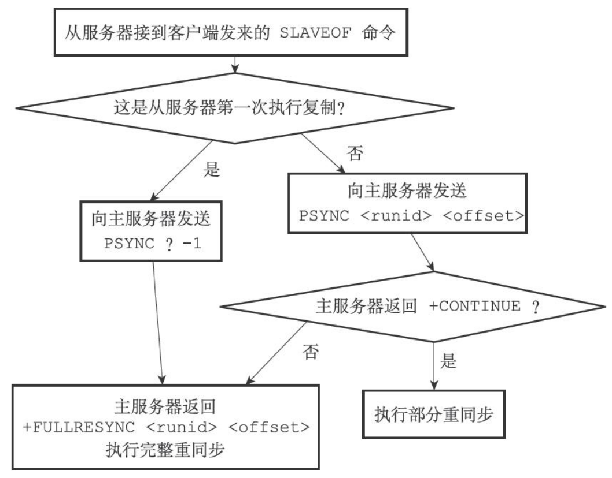

Redis复制

在 Redis 中，用户可以通过执行 SLAVEOF 命令或者设置 slaveof 选项，让一个服务器去复制另一个服务器，我们称呼被复制的服务器为主服务器，而复制主服务器的服务器被称为从服务器。
命令如下：
SLAVEOF host port
复制功能的实现
Redis 2.8前
Redis 复制功能分为同步（sync）和命令传播（command propagate）两个操作：
- 同步：将从服务器的数据库状态更新至主服务器的当前所处的数据库状态。
- 命令传播：在主服务器的数据库状态被修改，导致主从服务器的数据库状态不一致时，让主从服务器的数据库重新回到一致的状态。
同步
从服务器对主服务器的同步操作需要通过向主服务器发送 SYNC 命令来完成，以下是 SYNC命令的执行过程：
- 从服务器向主服务器发送
SYNC命令。 - 收到
SYNC命令的主服务器执行BGSAVE命令，在后台生成一个 RDB 文件，并使用一个缓冲区记录从现在开始执行的所有写命令。 - 当主服务器的
BGSAVE命令执行完成后，主服务器会将BGSAVE命令产生的 RDB 文件发送给从服务器，从服务器接收并载入这个 RDB 文件，将自己的数据库状态更新至主服务器执行BGSAVE时的数据库状态。 - 主服务器将记录在缓冲区中的命令发送给从服务器，从服务器执行这些写命令，将自己的数据库状态更新至主服务器当前的数据库状态。
命令传播
主服务器会将自己执行的写命令，也即是造成主从服务器不一致的那条写命令，发送给从服务器执行，当从服务器执行来相同的写命令后，主从服务器将再次回到一致状态。
缺陷
在 Redis 2.8 以前，从服务器对主服务器的复制可以分为一下两种情况：
- 初次复制：从服务器以前没有复制过任何服务器，或者从服务器当前要复制的主服务器和上一次复制的主服务器不同。
- 断线后重复制：处于命令传播阶段的主从服务器因为网络原因而中断了复制，但从服务器通过自动连接重新连上了主服务器，并继续复制主服务器。
在 Redis 2.8 以前，断线后重复制和初次复制使用相同的方法来实现，这就意味着断线后重复制要再次执行一遍 SYNC 命令。这是十分消耗资源的。（断线时间较短时，断线后重复制仅需要复制断线期间的命令即可，完全没有必要重新复制一遍）
SYNC命令是一个十分消耗资源的操作
- 主服务器需要执行
BGSAVE命令来生成 RDB 文件，这个命令会消耗主服务器大量的 CPU、内存和磁盘I/O 资源。- 主服务器需要将生成的 RDB 文件发送给从服务器，会消耗大量的网络资源，并对主服务器响应命令请求的时间产生影响。
- 从服务器需要载入 RDB 文件，在载入期间，从服务器会因为阻塞而无法处理命令请求。
Redis 2.8后
为了解决旧版复制功能在处理断线后重复制情况时的抵消问题，Redis 从 2.8 版本开始，使用 PSYNC 代替 SYNC 命令来执行复制时的同步操作。
PSYNC 具有完整重同步和部分重同步两种模式：
- 完整重同步：用于处理初次复制情况，和
SYNC命令执行步骤基本相同。 - 部分重同步：用于处理断线后重复制情况，当从服务器段吸纳后重新连接主服务器时，如果条件允许，主服务器可以将断线期间执行的写命令发给从服务器，从服务器只要接收并执行这些命令，就可以将数据库更新至主服务器当前所处的状态。
部分重同步的实现
部分重同步功能由以下三个部分构成：
- 主服务器的复制偏移量和从服务器复制偏移量。
- 主服务器的复制积压缓冲区。
- 服务器的运行 ID。
复制偏移量
执行复制的双方分别维护一个复制偏移量：
- 主服务器每次向从服务器传播 N 个字节的数据时，就将自己的复制偏移量 +N。
- 从服务器每次收到主服务器传来的 N 个字节的数据时，就将自己的复制偏移量 +N。
通过对比主从服务器的复制偏移量，程序可以很容易的知道主从服务器是否处于一致状态：
- 复制偏移量相同：处于一致状态。
- 复制偏移量不同：未处于一致状态。
复制积压缓冲区
由主服务器维护的一个固定长度的先进先出的队列，默认大小 1MB。
当主服务器进行命令传播时，不仅会将写命令发给所有从服务器还会将写命令入队到复制积压缓冲区。
因此，主服务器的复制积压缓冲区里面会保存着一部分最近传播的写命令，并且复制积压缓冲区会为队列的每个字节记录相应的复制偏移量。
当从服务器重新连上主服务器时，重服务器会通过 PSYNC 命令将自己的复制偏移量 offset 发送给主服务器，主服务器根据这个复制偏移量来决定对从服务器执行何种同步：
- 如果 offset 复制偏移量之后的数据仍在复制积压缓冲区中，那么执行部分重同步操作（将 offset 偏移量之后的数据发给从服务器）。
- 否则，执行完整重同步。
可以根据实际情况来调整复制加压缓冲区的大小。
服务器运行 ID
除了复制偏移量和复制积压缓冲区外，实现部分重同步还需要用到服务器运行 ID：
- 每个 Redis 服务器都有自己的运行 ID。
- 运行 ID 在服务器启动时自动生成，由 40 个随机的十六进制组成。
从服务器对主服务器进行初次复制时，从服务器会将主服务器的运行 ID 保存下来。当从服务器断线并重连上一个服务器时，从服务器会向当前连接的主服务器发送保存的运行 ID:
- 从服务器保存的运行 ID 和主服务器的运行 ID 相同，尝试执行部分重同步。
- 相反，从服务器保存的运行 ID 和主服务器的运行 ID 不同，执行完整重同步。
PSYNC 命令的实现
PSYNC 命令的调用方法有两种：
- 如果从服务器之前没有复制过任何主服务器，或者之前执行过
SLAVEOF no one命令，那么从服务器在开始一次新的复制时将向主服务器发送PSYNC ? -1命令，主动请求主服务器进行完整同步。 - 相反地，如果从服务器已经复制过某个主服务器，那么从服务器在开始一次新的复制时将向主服务器发送
PSYNC <runid> <offset>命令，其中 runid 是上一次复制的主服务器的运行 ID，offset 是从服务器当前的复制偏移量，接收到这条命令的主服务器将通过这两个参数来判断实现哪种同步操作。
根据情况，接受到 PSYNC 命令的主服务器会向从服务器发送以下三种回复中的其中一种：
+FULLRESYNC <runid> <offset>回复：表示主服务器与从服务器执行完整重同步操作：其中 runid 是主服务器的运行 ID，从服务器会将这个 ID 保存起来，在下次发送PSYNC命令的时候使用；offset 是主服务器当前的复制偏移量，从服务器会将这个值作为自己的初始化偏移量。+CONTINUE回复：表示主服务器将与从服务器进行部分重同步，从服务器只需要等着主服务器将自己缺少的哪部分数据发送过来就可以了。-ERR回复：表示主服务器的版本低于 Redis 2.8，它无法识别PSYNC命令，从服务器将向主服务器发送SYNC命令，并与主服务器执行完整同步。
